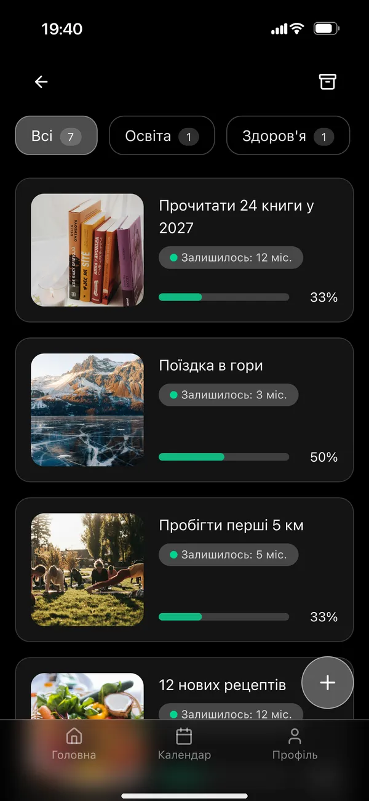
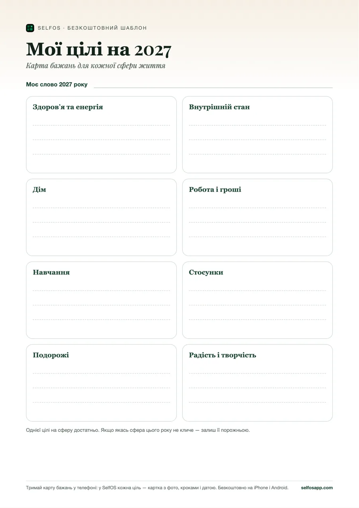

Цілі на 2027 рік: приклади і шаблон
In English: 2027 Vision Board Ideas
Новий рік — гарний привід зупинитися і вирішити, чого ти хочеш насправді. Тут приклади цілей для різних сфер життя, простий спосіб поставити їх так, щоб вони не забулися до лютого, і безкоштовний шаблон.
Як поставити цілі, які виконуються
- Не більше трьох–п'яти цілей на рік.
- Формулюй конкретно: не «більше читати», а «прочитати 24 книги».
- Для кожної цілі — перший маленький крок, який можна зробити цього тижня.
- Дата, навіть приблизна.
- Тримай цілі перед очима: карта бажань на стіні або на телефоні.
Приклади цілей по сферах
Карта бажань на телефоні
У SelfOS кожна ціль — це картка з фото, кроками і датою. Відмічаєш кроки — і смужка прогресу росте. За тиждень і за день до дати SelfOS нагадає. Фото можна взяти з вбудованої галереї безкоштовно, а своє — з Premium. Безкоштовно можна вести дві цілі одночасно, у Premium — без обмежень.


Безкоштовний шаблон
Перша сторінка — твоє слово 2027 року і по одній цілі для кожної сфери. Друга — картка на кожну ціль: моя ціль · навіщо мені це · перший крок · до якої дати · яке фото.
Дві сторінки для друку (A4, PDF).
Завантажити шаблонКарта бажань у SelfOS
Цілі з фото і маленькими кроками, звички і бонсай, який росте від щоденної турботи про себе. Безкоштовно на iPhone і Android.
Питання
Скільки цілей ставити на рік?
Три–п'ять. Краще виконати три, ніж забути про десять.
Коли робити карту бажань?
Наприкінці грудня або на початку січня, але підійде будь-який день. Багато хто оновлює її навесні чи на день народження.
Що робити, якщо ціль не виходить?
Переглянути її: зменшити крок або перенести дату. Ціль — це напрямок, а не іспит.